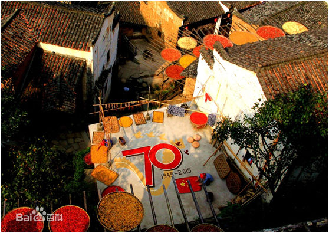
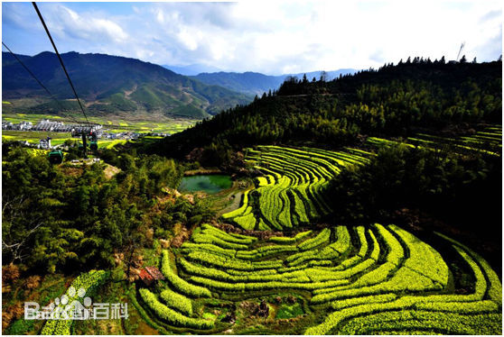
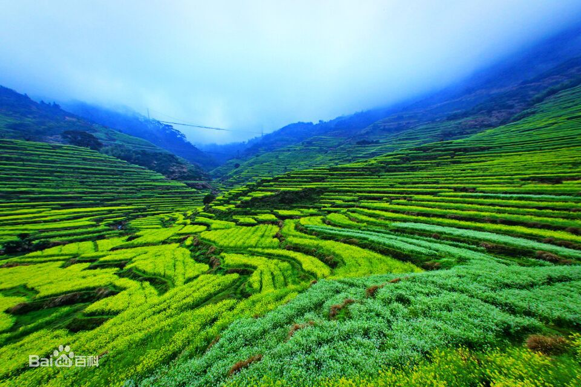
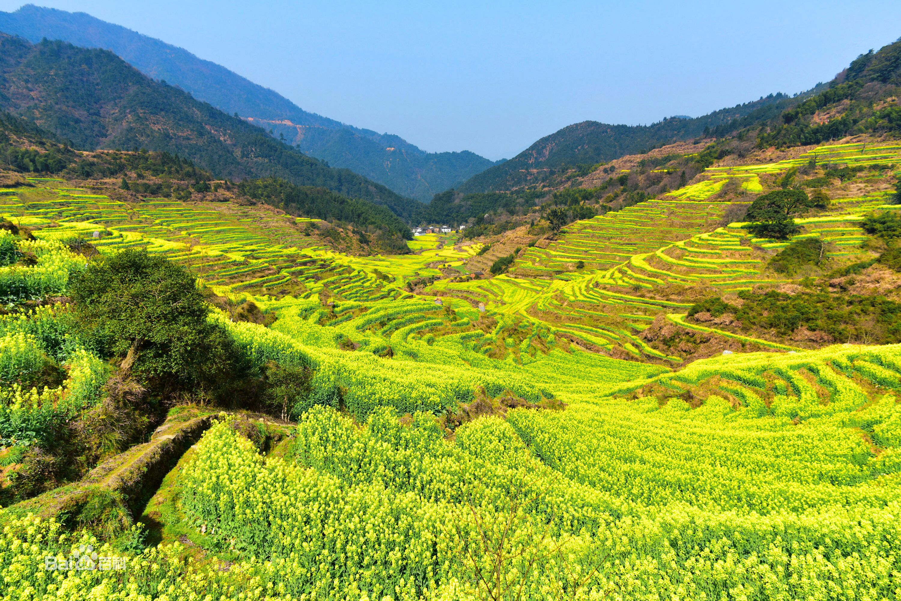

婺源，位于江西东北部，与皖、浙两省交界，土地面积2967平方公里，其中有林地378万亩，耕地32万亩，素有“八分半山一分田，半分水路和庄园”之称。全县辖16个乡（镇）、1个街道、1个工业园区、197个村（居）委会，人口36万。因生态环境优美和文化底蕴深厚，被誉为“中国最美的乡村”。[1]东邻国家历史文化名城衢州市，西毗瓷都景德镇市，北枕国家级旅游胜地黄山市和古徽州首府、国家历史文化名城歙县，南接江南第一仙山三清山，铜都德兴市，被外界誉为“ 中国最美的乡村“。拥有灵岩洞、桃溪等景点，荣获中国旅游强县、国家生态县、全国绿色小康县、全国重点产茶县、中国最美的古镇古村等称号。 风景名胜编辑 名胜概述 截至2015年底，婺源拥有AAAAA级旅游景区1家、4A级旅游景区12家，是全国4A级旅游景区最多的县份，也是全国唯一一个以整个县命名的国家AAA级旅游景区。 2013年1月17日，婺源江湾景区被国家旅游局授予“国家AAAAA级旅游景区”成功创建国家AAAAA级旅游区。同时，婺源国家乡村旅游度假实验区正式揭牌。 诗意中国 篁岭晒秋  婺源篁岭，地处江南山区，因村中“地无三尺平”，村落依山而建，村民房屋呈阶梯状扇型分布。自然条件的局限激发了先民的想象和创造力，每年夏秋交替，房前屋后成了竹晒匾的世界，长长木架托起圆圆的晒匾，春晒蕨菜、水笋；夏晒南瓜、豆角；秋晒稻谷、辣椒……，五颜六色的作物，衬托着徽派古建的粉墙黛瓦，绘就出世界独一无二的“晒秋”农俗景观。山居人家，对晒秋有着深厚的情感，篁岭晒秋已形成一种民俗文化现象，一个文化符号，代表了一种社会生活方式。因此，婺源篁岭也被文化部评为“最美中国符号”。 作为婺源旅游的佼佼者——篁岭景区十分重视与影视界的合作，与北京电影学院合作成立“北影驿站”，先后成为江西首届微电影节拍摄基地，电影《世外逃园》《九天玄鸟》，电视剧《左轮手枪》《欢乐颂2》的取景拍摄地。篁岭景区势必打造成为中国最具民俗特色的文化艺术影视村落。 [24] AAAAA级：江湾 AAAA级：篁岭、五龙源、文公山、汪口、李坑、熹园、大鄣山、卧龙谷、鸳鸯湖、思溪延村、严田、翼天文化旅游城 AAA级：婺源县（全境） 篁岭   江西婺源篁岭被誉为“全球十大最美梯田”之一。 [25] 地处婺源石耳山脉，面积15平方公里，周边千亩梯田簇拥。阳春三月，婺源篁岭山间油菜花全面盛开，千亩梯田油菜花同时绽放，漫山遍野。 篁岭以其独特的梯田地势与白墙黛瓦的徽派建筑群交相辉映，秀气而瑰丽。粉红的桃花、洁白的梨花，点缀在金灿灿的油菜花田中，俨然一幅的乡村田园画卷，春风吹过，生意盎然。 婺源篁岭每到情浓花艳，花开别样，看点多多，靓点出奇，打造高空赏花，一条300米的高空栈道和1260米的索道，俯瞰整个油菜花海。“坐高空缆车”一览众山小，俯瞰烟雨云霞下万亩梯田花海和梦幻田园让人春心荡漾，浪漫心爽。  并将直升机和VR技术应用于赏花，使游客可以从百米高空俯瞰粉墙黛瓦的徽州古民居与壮阔的梯田油菜花海的山水画卷，从一个全新的角度游览婺源美景，给游客不一样的赏花体验！ [26] 婺源建筑 婺源油菜花海 婺源油菜花海(5张) 婺源是当今中国古建筑保存最多、最完好的地方之一。全县有完好地保存着明清时代的古祠堂113座、古府第28栋、古民宅36幢和古桥187座。村庄一般都选择在前有流水、后靠青山的地方。村前的小河、水口山、水口林和村后的后龙山上的林木，历来得到村民悉心的保护。自1992年建立自然保护区后，河流、林木、古民宅、古树、古桥、古祠堂、古府第、古楼台、古碑和珍禽飞鸟保护得更好了，成了全国“生态文化旅游示范县”。 [27] 石门山峡谷 石门山峡谷 石门山峡谷(5张) 婺源石门山峡谷位于江湾镇前段村石门山，峡谷有幽谷，瀑布，奇石、世外田园等五大特色自然景观。景区把山水文化、休闲文化、养生文化、爱情文化、拓展文化融会贯通，打造成集休闲、避暑、游乐于一体的森林水上悠乐世界，是人与自然游乐的极佳去处。峡谷随峰而转，溪水绕路而行；浅滩奇石林立，深潭怪鱼藏底。峡谷绿树成荫，清凉幽静，负氧离子高达13万个/立方厘米，十足“天然氧吧”。一进入峡谷，旅途奔波劳累与喧嚣荡然无存，如同到了另一个世界，心境澄明。